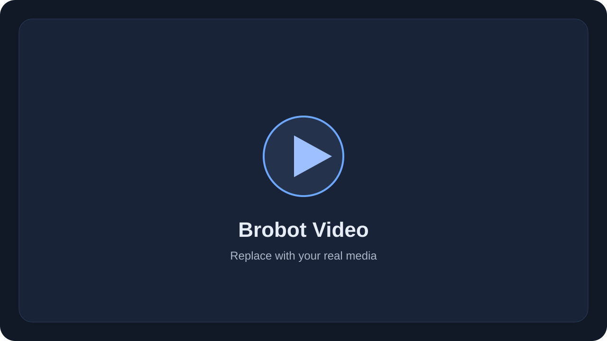
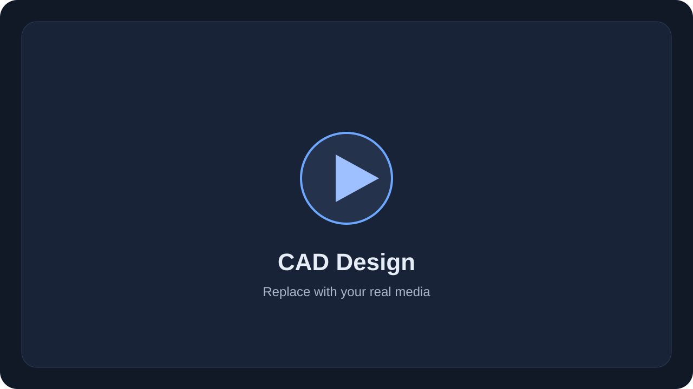
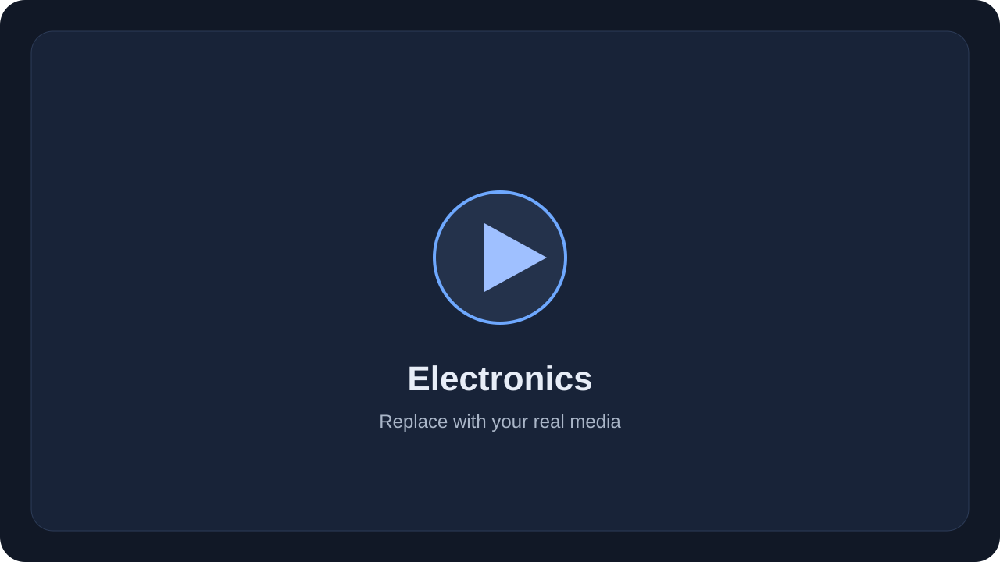
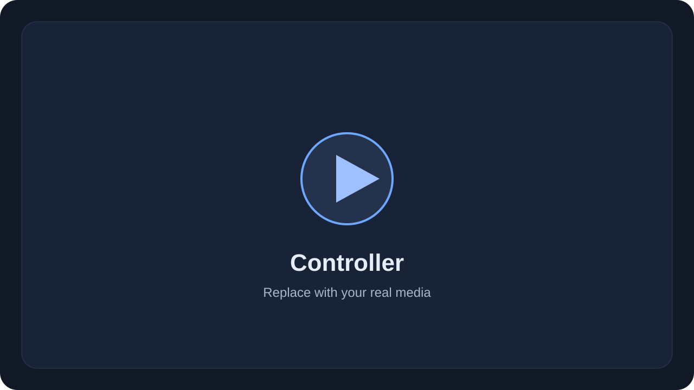

Private project
Brobot — Custom 6-DoF Robot Arm
Designed and built a fully custom 6-DoF robot arm with 3D-printed mechanics, self-designed electronics, and a custom C++ controller running on ESP32.
- C++
- ESP32
- Inverse kinematics
- Jacobian control
- CAD
- 3D printing

Video placeholder

